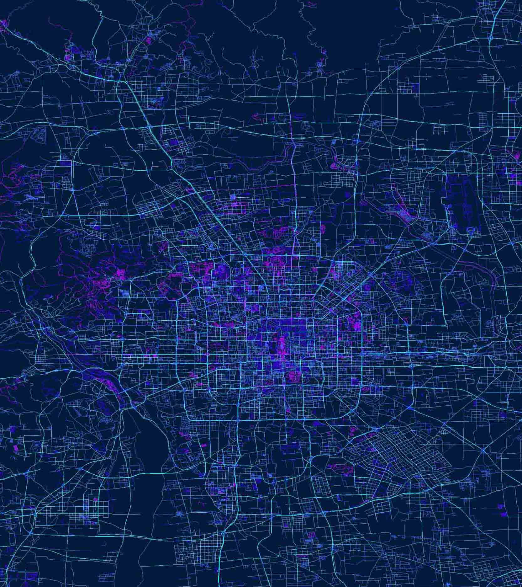
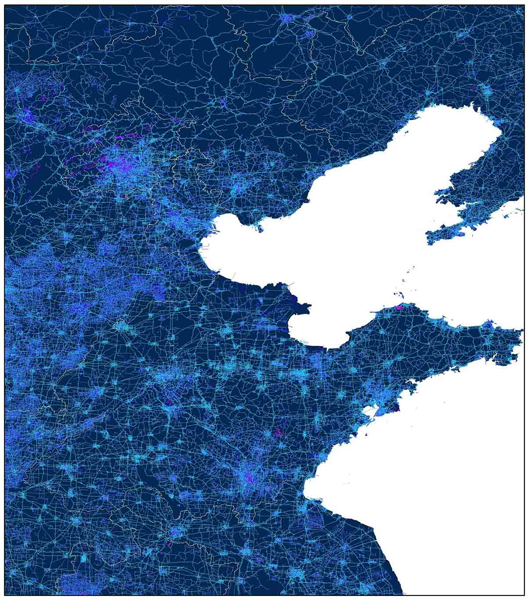
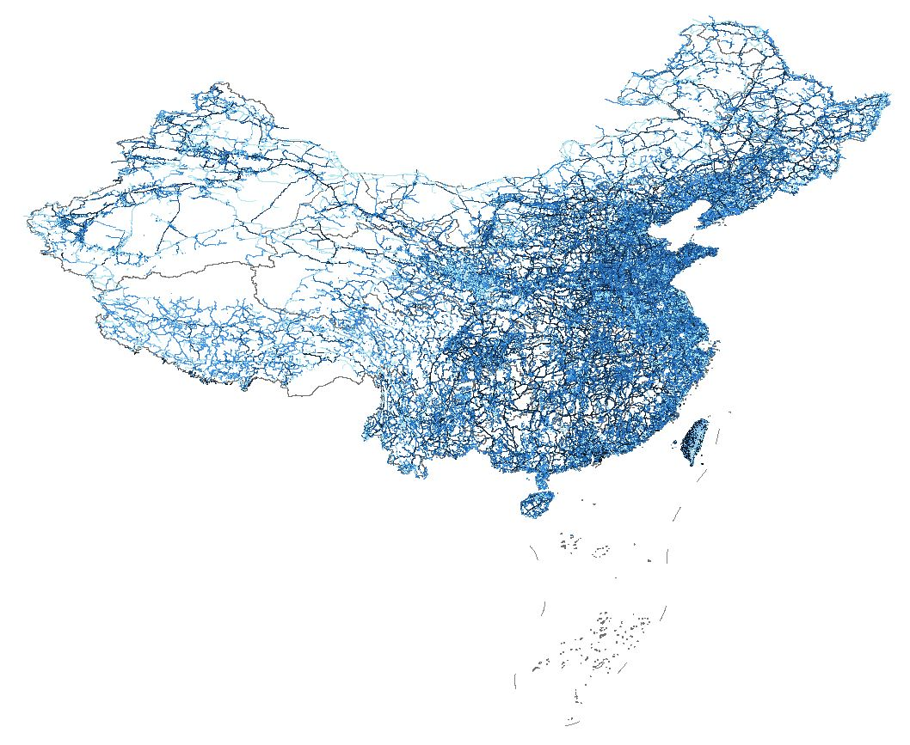
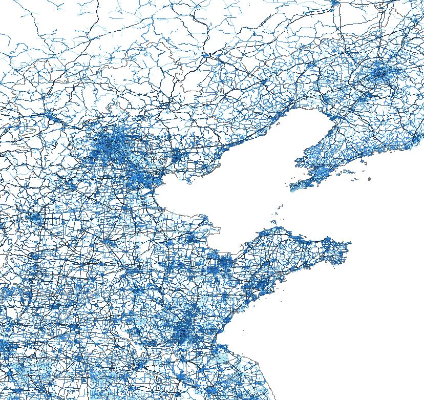

全国精细道路网矢量数据集
Vector data set of road network of China
数据概况
道路网络是社会有机体的“血管”，城市与城际的“大动脉”与“毛细血管”完美融合，有机体才可以高效的运作。
全国道路网矢量数据集，包括高速、国道、省道、县道、乡村小道等，数据来源于Open Street Map，具有非常高的精细度，数据属性相对完整。
空间范围：全国（各省、市）
数据类型：矢量 | ESRI Shapefile
投影坐标：GCS WGS 1984
生产时间：2019年10月



数据预览
预览图

华北地区

北京地区

北京市内道路网

北京故宫附近
数据下载
可供下载的省、市、地区及相应数据列表如下，可按省份和地区查找，目前仅提供市级数据下载。
中国省级、地市级行政区划可以参考 国家基础GIS数据
正在准备，敬请等待……
本博客将不定期上传数据，数据列表持续更新中......
如果需要的数据不在列表中，可以在页面下方评论区留言，说明需要的市级地区，优先上传！
Fighting, GISer!
最新博文